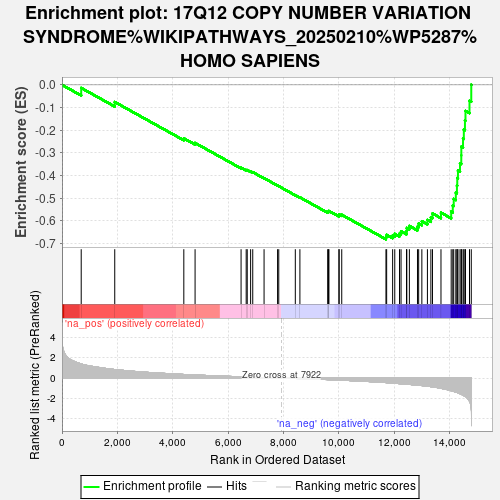

| | | Dataset | ag_ranks |
| Phenotype | NoPhenotypeAvailable |
| Upregulated in class | na_neg |
| GeneSet | 17Q12 COPY NUMBER VARIATION SYNDROME%WIKIPATHWAYS_20250210%WP5287%HOMO SAPIENS |
| Enrichment Score (ES) | -0.6821727 |
| Normalized Enrichment Score (NES) | -2.4803004 |
| Nominal p-value | 0.0 |
| FDR q-value | 0.0 |
| FWER p-Value | 0.0 |
Table: GSEA Results Summary

Fig 1: Enrichment plot: 17Q12 COPY NUMBER VARIATION SYNDROME%WIKIPATHWAYS_20250210%WP5287%HOMO SAPIENS
Profile of the Running ES Score & Positions of GeneSet Members on the Rank Ordered List
| SYMBOL | RANK IN GENE LIST | RANK METRIC SCORE | RUNNING ES | CORE ENRICHMENT | | 1 | CCL5 | 694 | 1.395 | -0.0136 | No |
| 2 | CCL4 | 1906 | 0.841 | -0.0756 | No |
| 3 | CACNB1 | 4402 | 0.355 | -0.2363 | No |
| 4 | CCL3 | 4809 | 0.302 | -0.2566 | No |
| 5 | ARHGAP23 | 6471 | 0.123 | -0.3663 | No |
| 6 | CCL18 | 6656 | 0.106 | -0.3762 | No |
| 7 | ACACA | 6694 | 0.102 | -0.3763 | No |
| 8 | AATF | 6816 | 0.088 | -0.3824 | No |
| 9 | NLE1 | 6893 | 0.081 | -0.3856 | No |
| 10 | CCL2 | 7302 | 0.047 | -0.4121 | No |
| 11 | SLFN11 | 7790 | 0.009 | -0.4449 | No |
| 12 | ZNF830 | 7833 | 0.007 | -0.4476 | No |
| 13 | IKZF3 | 8431 | -0.040 | -0.4871 | No |
| 14 | CWC25 | 8597 | -0.056 | -0.4970 | No |
| 15 | RPL23 | 9601 | -0.149 | -0.5614 | No |
| 16 | MRM1 | 9629 | -0.151 | -0.5596 | No |
| 17 | TBC1D3B | 9646 | -0.153 | -0.5571 | No |
| 18 | LIG3 | 10007 | -0.196 | -0.5768 | No |
| 19 | DUSP14 | 10015 | -0.196 | -0.5726 | No |
| 20 | ZNHIT3 | 10109 | -0.208 | -0.5739 | No |
| 21 | CCL8 | 11707 | -0.441 | -0.6716 | Yes |
| 22 | RASL10B | 11732 | -0.447 | -0.6625 | Yes |
| 23 | MED1 | 11948 | -0.493 | -0.6653 | Yes |
| 24 | MLLT6 | 12025 | -0.511 | -0.6582 | Yes |
| 25 | CCL3L3 | 12197 | -0.546 | -0.6567 | Yes |
| 26 | TAF15 | 12252 | -0.558 | -0.6470 | Yes |
| 27 | CISD3 | 12450 | -0.602 | -0.6459 | Yes |
| 28 | GGNBP2 | 12460 | -0.606 | -0.6320 | Yes |
| 29 | SYNRG | 12553 | -0.625 | -0.6233 | Yes |
| 30 | DHRS11 | 12846 | -0.694 | -0.6265 | Yes |
| 31 | STARD3 | 12889 | -0.705 | -0.6124 | Yes |
| 32 | SOCS7 | 13004 | -0.737 | -0.6025 | Yes |
| 33 | PGAP3 | 13205 | -0.804 | -0.5968 | Yes |
| 34 | PEX12 | 13330 | -0.844 | -0.5850 | Yes |
| 35 | SLFN12 | 13388 | -0.864 | -0.5681 | Yes |
| 36 | CCL14 | 13695 | -1.010 | -0.5647 | Yes |
| 37 | MMP28 | 14064 | -1.243 | -0.5599 | Yes |
| 38 | RAD51D | 14122 | -1.283 | -0.5330 | Yes |
| 39 | CCT6B | 14156 | -1.311 | -0.5038 | Yes |
| 40 | RFFL | 14232 | -1.368 | -0.4761 | Yes |
| 41 | TCAP | 14272 | -1.408 | -0.4450 | Yes |
| 42 | STAC2 | 14284 | -1.421 | -0.4117 | Yes |
| 43 | MIEN1 | 14309 | -1.446 | -0.3787 | Yes |
| 44 | GRB7 | 14383 | -1.545 | -0.3466 | Yes |
| 45 | PIGW | 14429 | -1.596 | -0.3115 | Yes |
| 46 | PPP1R1B | 14431 | -1.598 | -0.2733 | Yes |
| 47 | SRCIN1 | 14492 | -1.687 | -0.2369 | Yes |
| 48 | FBXL20 | 14521 | -1.728 | -0.1974 | Yes |
| 49 | PCGF2 | 14562 | -1.785 | -0.1574 | Yes |
| 50 | ERBB2 | 14581 | -1.813 | -0.1152 | Yes |
| 51 | PLXDC1 | 14726 | -2.274 | -0.0704 | Yes |
| 52 | C17orf78 | 14790 | -3.144 | 0.0006 | Yes |
Table: GSEA details [plain text format]
Fig 2: 17Q12 COPY NUMBER VARIATION SYNDROME%WIKIPATHWAYS_20250210%WP5287%HOMO SAPIENS: Random ES distribution
Gene set null distribution of ES for 17Q12 COPY NUMBER VARIATION SYNDROME%WIKIPATHWAYS_20250210%WP5287%HOMO SAPIENS